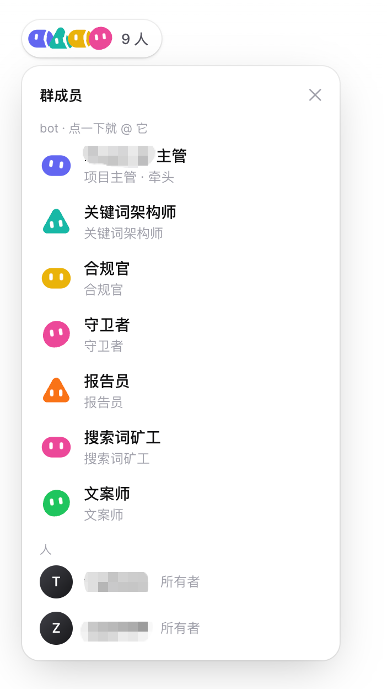

问题不是“GSC 为什么延迟”，而是要先确认站点到底处于哪一步：没有完成资源验证、没有被谷歌收录、已经收录但没有排名，还是页面基础优化不足。不同状态对应不同处理方法，不能只凭“一天后再来看”判断。
问题：新站四五天仍没有 GSC 数据
LIU 反馈，以前的新站通常一天左右就能在 GSC 看到数据，但最近两个站已经四五天没有数据，页面也显示“一天后再来看”。这说明需要先排查收录和排名，而不是单纯等待。
解决方法：按五步逐项排查
- 确认 GSC 资源已完成站长验证，并切换到最近 24 小时数据查看。
- 在谷歌搜索
site:你的域名，确认域名下是否有页面已经被收录。 - 如果
site:没有结果，先检查资源验证、首页是否可索引，以及首页 URL 和站点结构是否正常。 - 如果
site:有结果，但最近 24 小时没有查询数据，优先检查目标关键词是否太难、站点是否拿不到排名。 - 继续检查首页 on-page SEO：页面标题、主要内容和内部链接是否清晰对应用户搜索需求。
排查顺序很关键：先用 site: 区分“未收录”和“已收录但没有流量”，再判断关键词与首页质量。只看到 GSC 没有数据就认为账号被处罚，证据不足。
判断表：不同现象对应什么
| 现象 | 优先判断 | 下一步 |
|---|---|---|
site:域名 没有结果 | 页面尚未被谷歌收录 | 检查 GSC 验证、首页可索引性与站点结构 |
site:域名 有结果，但 GSC 24 小时无查询 | 已收录，但没有拿到有效排名或搜索曝光 | 检查关键词难度与首页 on-page SEO |
| GSC 一直提示稍后再看 | 数据处理尚未返回，不能直接等同于以后会有数据 | 同时用 site: 和页面状态做交叉判断 |
| 多个站同时迟迟不收录 | 可能涉及站点质量、页面基础或账号处罚，但目前没有足够证据确认原因 | 逐站检查验证、首页内容与 Search Console 处罚信息 |
“账号做太多垃圾站会被连坐”仍只是猜测
群里有人怀疑，同一谷歌账号绑定大量低质量站点会让新站被“打标签”，从而拖慢收录。但这条判断没有被证实：另一位群友表示自己一个账号绑定约 50 个站并未出现该问题；也有人指出，除非账号或站点受到人工处罚，否则不应直接把延迟归因于“连坐”。
因此，更稳妥的处理是把账号关联问题放到最后：先检查 GSC 验证、是否收录、关键词和首页质量，再查看 Search Console 是否确有处罚记录。不能因为群里有人提到“打标签”就跳过基础排查。
这次问题的最小结论
- GSC 没数据不代表一定没收录，先用
site:查询。 - 已经收录却没有查询数据，更常见的原因是关键词太难或首页没有形成清晰搜索匹配。
- 账号“连坐”目前只有经验猜测，没有可重复验证的证据。
- 把验证、收录、排名、首页优化分开检查，才能知道下一步该改什么。
原始记录中的补充话题
聊天末尾，哥飞还提到广告投放 Agent 化，并展示了主管、关键词架构师、合规官、搜索词矿工、文案师等角色组成的群成员界面。这个话题与前面的 GSC 收录排查没有直接关系，仅按原始记录保留。

原始对话
聊天记录（31 条）
参与者 8 人：LIU、哥飞、SAI、村长、郭健文、不知道、龙灯山排水渠过弯、石穿空 · 时间范围 2026年10月23日 19:13 至 2026年10月23日 20:01 · 原始 34 条，保留 31 条，删除 3 条空消息